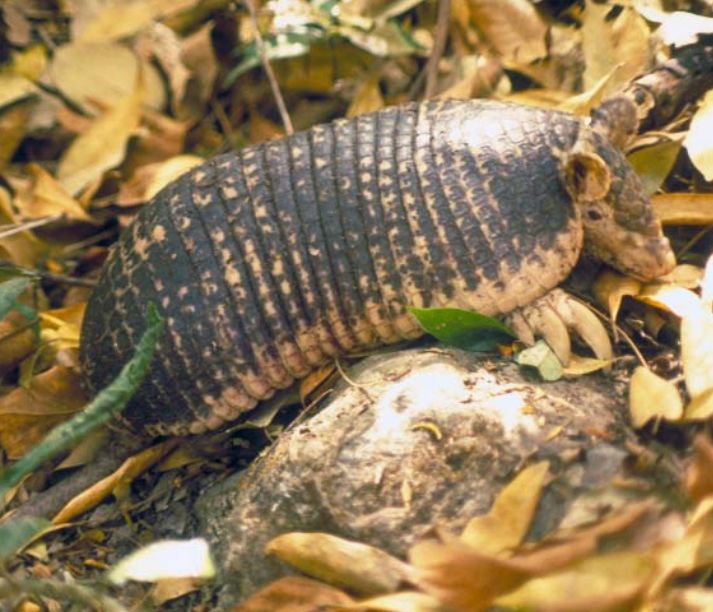

DESCRIPCIÓN:
Es un armadillo que se distingue por su cráneo y hocico proporcionalmente ancho y corto, por la cola corta y desprovista de placas epidérmicas y por su carapacho con 12 ó 13 bandas flexibles. Las patas delanteras tienen cinco dedos, los cuales poseen grandes garras, siendo particularmente notable la del tercer dígito.
ESTADO DE CONSERVACIÓN:
No aparece en los listados de especies en peligro de extinción de la SEDESOL, UICN o de los Estados Unidos. Se encuentra en el Apéndice III de CITES. Es una especie que parece ser rara a lo largo de toda su área de distribución. Debido a su distribución restringida en México (menos de 10 000 km2) y a la destrucción de las selvas en la región Lacandona, la especie posiblemente se encuentra en peligro de extinción en el país.
Fuente: Alfredo D. Cuarón